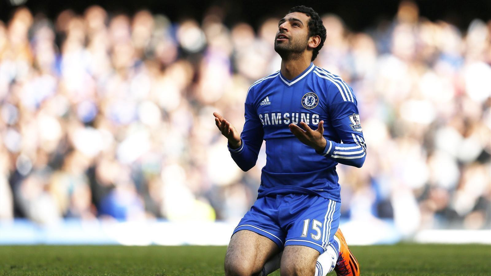

|  |
| MOHAMED SALAH WITH CHELSEA FC
Picture By Google |
Mohamed Salah kini dikenal sebagai pemain andalan Liverpool. Bahkan, bisa dikatakan Mohamed Salah sekarang menjadi legenda hidup klub berjulukan The Reds itu.
Jauh sebelum menjadi bagian dari Liverpool, Mohamed Salah sebenarnya pernah menjalani karier di Chelsea. Saat itu The Blues membelinya dari FC Basel dengan harga 16 juta pound pada Januari 2014.
Namun, karier Mohamed Salah di Chelsea berjalan singkat. Pemain asal Mesir itu hanya bermain 19 kali selama kariernya bersama The Blues.
Jose Mourinho menjadi pihak yang kerap disalahkan atas penampilan loyo Mohamed Salah itu. Namun, sosok asal Portugal itu baru-baru ini mengeluarkan pembelaan.
"Ketika orang bilang saya yang membiarkan Salah pergi dari Chelsea, saya justru ingin mengatakan sebaliknya," kata Jose Mourinho kepada Obi One Podcast.
Saat masih memperkuat FC Basel, Mohamed Salah sudah dipantau oleh banyak klub besar. Satu klub yang sangat tertarik saat itu adalah Liverpool.
Chelsea yang masih ditukangi Jose Mourinho pun berjuang keras untuk mendapatkan tanda tangan Mohamed Salah saat itu. "Dia sempat sangat dekat dengan Liverpool, dan saya melakukan perang dengan mereka untuk membuat Salah lebih memilih Chelsea," jelas Jose Mourinho.
Karier Mohamed Salah di Chelsea hanya bertahan seumur jagung. Pemain asal Mesir itu tak juga mendapatkan tempat utama di skuad utama The Blues.
Menurut Jose Mourinho, Mohamed Salah tidak sabar saat itu. Ia meminta dipinjamkan ke Fiorentina dan kemudian pindah secara permanen ke AS Roma dan Liverpool.
"Salah tidak mau menunggu, dia ingin dipinjamkan, lalu Chelsea menjual Salah, bukan saya," tegasnya.